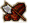
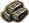

第二章 游戏界面介绍
2.1 游戏界面一览

在单人游戏或多人游戏模式下开始游戏后，玩家即进入了游戏操作界面。
2.1.1 总览
游戏画面一般如下图所示：
①
游戏开始的时候，一般会有一小群农民,选中农民，则农民单位周边会出现框形光标。
②
游戏中共有6种资源：木头、食物、黄金、石头、铁和煤，玩家拥有的每一种资料的数量会显示在这里。
③
游戏中玩家的名称以及分组列表，将在这里显示，后面的括号里还显示了当前该玩家的得分情况。
⑤
小地图总是位于游戏界面的右下方，可以帮助你查看游戏地图的其他区域的大致情况。要迅速将视角切换到地图上的地图区域，可以通过鼠标左键单击小地图上想要去的地方。如果游戏初始选择了战争烟雾模式，则小地图上其他区域一般也会显示为黑色。随着慢慢的扩展视野，小地图才会显示出更多区域。在小地图中，被选择的单位会显示白色。小地图还会通过红色闪烁的方框提示你有危险发生。
小地图还有一个微星地图模式，通过键盘上的 M 按键切换，更小的小地图只会显示目前视野区域周边的一部分小地图。
⑥
当玩家选中一个单位，单位的名称和国家属性会显示在这里；点击敌人的单位或自然单位，也会显示。
游戏中的一些提示信息（例如升级完成或其他玩家发送的消息）也会显示在这里。
⑦
选中的单位或建筑的操作界面，将会显示在游戏界面的左下角，如图显示的是农民的操作界面。左边是农民的一些参数，右边是这些农民目前可以建造的建筑清单；关于操作界面的更多信息，请参考
2.3 单位与建筑操作界面 章节。
⑧
点击
M 操作清单按钮可以开启一些辅助工具按钮，也可以通过
M 操作清单里的“游戏菜单”按键进入游戏菜单，在游戏菜单里可以退出、保存、设定或加载游戏，关于
M 菜单请参考
2.1.2 M 菜单及操作 章节。
⑨
点建造建筑会增加人口上限，当你的人口已经到达了最大容量时，这里就会闪烁一个小房子的图案，提示你需要更多的建筑来增加人口容量。此时，住所里无法生成新的农民。
如果玩家建造了编队，那么在闪烁的小房子的图案左边会显示一个编队按钮，点击这个按钮，可以展开编队列表，方便玩家选择。
⑩
战役和单人任务开始的时候，会显示如图所示的信息框，会显示玩家需要完成的目标与一些介绍。
⑪
信息框的操作按钮，点击“OK”表示你已经知晓任务要求，并且可以关闭信息框。
2.1.2 M 菜单及操作
M 菜单是游戏里的一个重要的菜单。通过鼠标点击屏幕上方带有 M 字母的方框按钮，既可弹出M菜单的选项。M 菜单的选项在不同的游戏环境下都会略有差别。在单人随机游戏、多人游戏、战役、编辑器中，都有不同的选项。
随机游戏和网络死亡竞赛游戏里的 M 菜单
Game Menu 点击显示游戏菜单；
Show Unit Information 显示选中的单位信息框；
Show Game Information 显示游戏信息框；
Toggle Mini-Map Modes 切换小地图模式；
Show Inaccessible Zones 切换不可到达区域模式；
Turn On Transpartent Mode 开启建筑半透明模式；
Zoom View 放大视野
Surrender 投降；
Resource Transfer 资源转移；
Show Tool Options 开启选项栏；
战役和单人任务里的 M 菜单
Game Menu 点击显示游戏菜单；
Show Unit Information 显示选中的单位信息框；
Show Game Information 显示游戏信息框；
Toggle Mini-Map Modes 切换小地图模式；
Show Inaccessible Zones 切换不可到达区域模式；
Turn On Transpartent Mode 开启建筑半透明模式；
Zoom View 放大视野
Surrender 投降；
Restart Mission 重新开始游戏；
Message History 显示之前的任务信息框；
地图编辑器里的 M 菜单
Game Menu 点击显示游戏菜单；
Show Unit Information 显示选中的单位信息框；
Show Game Information 显示游戏信息框；
Toggle Mini-Map Modes 切换小地图模式；
Show Inaccessible Zones 切换不可到达区域模式；
Turn On Transpartent Mode 开启建筑半透明模式；
Zoom View 放大视野
Show Toolbox 显示工具栏；
Show Tool Options 显示选项栏；
Create New Map 建立新地图；
Game Menu/游戏菜单 (F12)
打开游戏菜单后，会显示一个弹出框，玩家可以选择需要的选项，进程保存、加载、退出游戏等操作。也可以通过键盘快捷键 F12 来打开。
Resume/继续游戏：在单人或多人游戏中，点击这里可以返回继续进行游戏操作；
Return to the editor/返回编辑器戏：在编辑器中，点击这里可以返回编辑器操作；
Save/保存：打开保存对话框，玩家可以保存当前的游戏或编辑的地图；
Load/加载：打开保存的游戏界面，可以加载之前保存的游戏或地图；
Settings/设置：打开设置界面，可以设置游戏参数，请参考
1.5 设置 章节；
Exit to Menu/退出到菜单：退出当前游戏并返回主菜单，目前的游戏不会被保存。
Show Unit Information/显示选中的单位信息 (U)
点击这个按钮，会在游戏界面右上角显示目前选中的单位或建筑的信息框，信息框中包含了该单位的介绍与升级信息。可以通过键盘快捷键 U 来打开。更多关于单位信息界面的资讯，请参考
2.4.1 单位信息 章节。
Show Game Information/显示游戏信息 (I)
点击这个按钮，会在游戏界面右上角显示目前游戏的信息，包括玩家得分、外交情况、商品贸易价格等等。可以通过键盘快捷键 I 来打开。更多关于游戏信息界面的资讯，请参考
2.4.2 游戏信息 章节。
Toggle Mini-Map Modes/切换小地图模式 (M)
点击这个按钮，游戏界面右下角的小地图会变得更小，只显示原来小地图1/4的范围，这样可以给玩家提供更多的视野。再次点击，小地图会恢复原样。可以通过键盘快捷键 M 来切换。更多关于小地图的资讯，请参考
2.1.4 小地图 章节。
Show Inaccessible Zones/切换不可到达区域模式 (Q)
点击这个按钮，游戏界面中的不可到达的区域会用阴影显示出来，在不可到达区域中，玩家无法建造建筑，军队也会避开这块区域。再次点击这个按钮，会显示海军不可到达区域；再次点击即可关闭。可以通过键盘快捷键 Q 来切换。
Turn On Transpartent Mode/开启建筑半透明模式 (O)
点击这个按钮，游戏界面中的建筑会变成半透明的状态，方便玩家看到被建筑遮挡住的单位。再次点击，可以恢复原状。可以通过键盘快捷键 O 来切换。
Zoom View/放大视野 (L)
点击这个按钮，可以放大观看者的视野，由近地俯瞰变成远处鸟瞰。观察的范围增加的的同时，游戏中的单位和建筑会变小。放大视野有时候也被称作L模式。可以通过键盘快捷键 L 来切换。更多关于L模式的资讯，请参考
2.1.5 L模式 章节。
Surrender/投降
在单人游戏或多人游戏模式中，点击投降按钮，即可认输并按 ESC 键退出游戏。
Resource Transfer/资源转移
在网络死亡竞赛游戏模式中，点击资源转移按钮，可以将物资转移给其他玩家。在弹出的资源转移框中进行操作，即可向别的玩家转移资源，转移成功后游戏界面左下角会对所有玩家显示“资源已经转移”的提示信息。更多关于资源转移的资讯，请参考
2.1.3 资源 章节。
Restart Mission/重新开始游戏
在战役或单人任务中，点击这里可以重新开始这个关卡或任务。
Message History/显示之前的任务信息框
在战役或单人任务中，点击这里可以打开之前的历史信息框，可以通过信息框下面的按钮查看之前和之后的提示信息。
Show Tool Options/开启选项栏（Ctrl+O）
在地图编辑器中，选项栏是默认打开的，如果你关闭了选项栏，可以通过这里打开。在选项栏中可以选择不同的颜色代表不同的势力。
在网络死亡竞赛游戏模式中，如果有别的玩家和你一队，这个选项就会出现。点击这里可以打开选项栏，通过选项栏中不同颜色的选择，可以选择盟友的颜色。
可以通过键盘快捷键 Ctrl+O 来打开。
Show Tool Options/显示工具栏 （Ctrl+T）
在地图编辑器中，选项栏是默认打开的，如果你关闭了选项栏，可以通过这里打开。选项栏中包含编辑器里几乎所有的操作按钮。请参考本站
地图编辑器 板块，其中有详细介绍。可以通过键盘快捷键 Ctrl+T 来打开。
Create New Map/建立新地图
在地图编辑器中，点击会弹出创建新地图的信息框，玩家可以选择地图的大小等参数，然后建立新图。原来地图上部署的自然景观与单位都会被删除。可以选择的地图大小有以下3种选项：
Normal/标准 —— 标准尺寸的地图
Large/大型(2×2) —— 标准尺寸地图的4倍大小
Huge/巨大(4×4) —— 标准尺寸地图的16倍大小
2.1.3 资源
要在游戏中发展、建造建筑或训练军队、升级或位置军队，就必须要有特定的资源。游戏中一共有6种资源，分别是：木头、食物、黄金、石头、铁和煤。在屏幕的右上方，玩家拥有的资源数量会显示在这里。

木材 Wood 木材对于建造建筑物、生产船只和训练美洲原住民的军队来说都是不可忽视的。可以通过伐木获得；
食物 Food 所有单位的维持都会随着时间消耗一定量的食物，训练军队也需要食物，尤其是骑兵，需要的食物更多。如果缺乏食物，可能会造成饥荒。食物可以通过收割粮食、打猎和捕鱼获得；

石头 Stone 石头对于建造建筑来说，是重要资源。此外，一些升级和军事单位也会需要一些石头。石头可以通过开采石矿来获得；
黄金 Gold 黄金是一个至关重要的物资，建造建筑、训练士兵、建造火炮和战舰乃至大部分升级都需要一定量的黄金。一些军事单位也会随着时间而需要黄金来维持。黄金可以通过开采金矿来获得；
铁 Iron 很多军事单位的训练都需要铁。此外，火枪开火、加农炮和军舰开炮也需要消耗铁。铁可以通过开采铁矿来获得；
煤 Coal 训练一些军事单位尤其是火枪或火炮单位需要煤。火枪开枪、火炮或军舰开炮也需要消耗煤。煤可以通过开采煤来获取。
在游戏中，这6种资源大部分是通过农民劳动来获得的，有些资源也可以靠猎人、捕鱼小舟和贸易站等来获得。玩家必须要获取足够的资源，才能更好的发展和维持军队。关于如何获取资源，请参考
3.3.2 获取资源 章节。
转移资源
在多人死亡竞赛游戏过程中，通过 M 菜单中选择“转移资源”会弹出资源转移操作框。在这里填写好参数，选择“转移”即可将物资转移给别人。
Send To/送给 —— 选择一个要赠与资源的玩家
Resource/资源种类 —— 选择一种要转移的资源
Amount/数量 —— 输入要转移的资源数量
设定好以上信息后，点击“Transfer”即可转移设定的物资。
2.1.4 小地图
通过游戏界面右下角的小地图，可以简单的查看整个地区的情况。
小地图在游戏界面的右下角出现，在小地图上，会通过缩略的模式显示整个地图的面貌，帮助玩家管理整个区域。通过点击小地图，游戏视角可以快速转移到点击的区域。小地图上的白色框（如右图）即为目前游戏视野的范围。在单人游戏或多人游戏开始的时候，往往视野中多数是黑色的战争烟雾，在小地上也被显示为黑色。在小地图中，玩家的单位和建筑都会显示为一个带颜色的小点，颜色即为该玩家选择的颜色，被选择的单位会显示白色。地面的颜色通常为地面纹理的颜色，例如在北方气候中，小地图的地面通常为绿色，在沙漠气候中，小地图地面通常为黄色。小地图还会通过红色闪烁的方框提示你有危险发生。
缩小小地图
点击 M 菜单中的切换小地图模式（快捷键 M ），游戏界面右下角的小地图会变得更小（如下图），只显示原来小地图1/4的范围，这样可以给玩家提供更多的视野。再次点击，小地图会恢复原样。可以通过键盘快捷键 M 来切换。
2.1.5 L模式
点击 M 菜单中的“放大视野”可以放大观看者的视野，由近地俯瞰变成远处鸟瞰。观察的范围增加的的同时，游戏中的单位和建筑会变小。放大视野有时候也被称作 L 模式。可以通过键盘快捷键 L 来切换。
在放大视野模式下，“不可到达区域模式”无法正常显示，其他方便的操作，都和正常的视野模式相同。